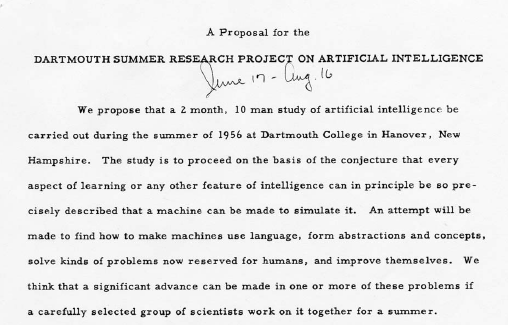
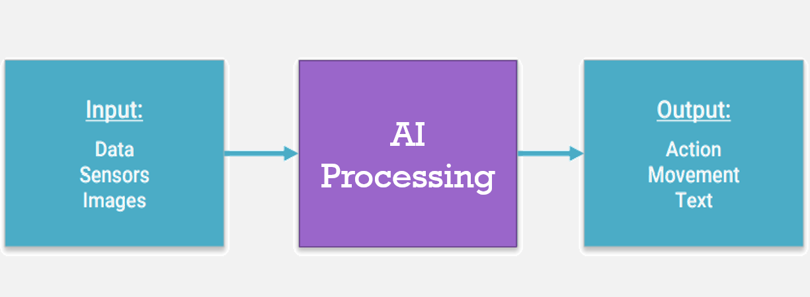

v.
What is "Classical" AI?
Reference Materials
-
Artificial Intelligence: A Modern Approach - Stuart J. Russell and Peter Norvig, 4th Edition, 2022
- Dive into Deep Learning
- Zhang, Aston, Lipton, Zachary C. et.al (2021), arXiv preprint arXiv:2106.11342
- Neural Networks and Deep Learning
- online book by Michael Nielsen

Alternative Materials
-
Artificial Intelligence: A Textbook - Charu C. Aggarwal, 2021. Springer.
- The Hundred-Page Machine Learning
- online book by Andriy Burkov
- Deep Learning
- Ian Goodfellow and Yoshua Bengio and Aaron Courville (2016), MIT Press
-
Online Courses: - Various lectures are available in online platforms, e.g Udacity, Coursera, edX

Course Structure
Core part of
- Introduction to AI & ML
- Machine Learning Fundamentals
- Supervised Learning Algorithms
- Neural Networks & Deep Learning
- Unsupervised Learning Algorithms
- Reinforcement Learning
- Transfer Learning
- Convolutional Neural Networks
- Generative Models
Email Policy
-
Short andto the point email will be read. - Talk to me
before or after class during my office hours. - An alternative mutually acceptable meeting time may need to be agreed upon if there's an unavoidable scheduling conflict.
Questions?

Email:
Introduction to AI & ML
- The
definition : what is Artificial Intelligence (AI), Machine Learning (ML), and Deep Learning (DL)? - The
evolution of AI -> ML -> DL - The
relationship between AI, ML, and DL - The
applications of AI, ML, and DL -
Why shoud we learn AI?
AI in Early Days
-
1000BC: A life-sized automaton - marvelous invention created by a Chinese artificerYan Shi . -
400BC: A mechanical pigeon - created by a friend of the famouse Greek philosopherPlato . -
1495: Leonardo's Knight - a mechanical knight designed and possiblly created byLeonardo da Vinci . -
1929: Gakutensoku - the 1st Japanese robot by ProfessorMakoto Nishimura . -
1949: Giant Brains, or Machines that Think Edmund Callis Berkley .
Birth of Modern AI
-
1950: Computer Machinery and Intelligence -Alan Turing proposed a test of machine intelligence (Turing Test). -
1952: Program to play checkers - first to ever learn the game independently byArthur Samuel . -
1956: Artificial Intelligence - the term was coined in Dartmouth workshop byJohn McCarthy and others.
Turing Test

Can
Modern AI
John McCarthy, Marvin L. Minsky, Nathaniel Rochester, and Claude E. Shannon (1956)
Key requirements of AI
- Abstractions
- Creativity
- Automatic computer
- Language understanding
- Usage of neuron nets
- Computational efficiency
- Self-improvement
- machine learning
Advancement of Modern AI

3 stages:
Stage I: 1950's - 1980's
(automation)
-
1951: 1st working AI Programme - can play chckers and chess at the University of Manchester. -
1957: 1st artificial neural network - designed byFrank Rosenblatt . -
1967: Nearest neighbour -
1979: Stanford Cart
Stage II: 1980's - 2010's
(learning)
-
1981: Explanation Based Learning (EBL) - learnt general problem-solving techniques by observing human solutions. -
1985: NETtalk Terry Sejnowski andCharles Rosenberg . -
1989: CNN - for recognising images byYann LeCun, Yoshua Bengio , andPatrik Haffner . -
1997: Deep Blue -
2006: Deep Learning Geoffrey Hinton to explain new algorithms that empower computers to distinguish objects and images and video.
Stage III: 2010's - now
-
2010: Microsoft Kinect -
2011: IBM Watson -
2014: GAN Ian Goodfellow . -
2016: Google AlphaGo Lee Sedol . -A historical match! -
2017: Google AlphaGo Ke Jie . -running on a single computer! -
2018: GPT model OpenAI . -
2021: DALL-E OpenAI .
Stage III: 2010's - now
(intelligence)
-
2014: GAN Ian Goodfellow . -
2016: Google AlphaGo Lee Sedol .-A historical match! -
2017: Google AlphaGo Ke Jie . -running on a single computer! -
2018: GPT model OpenAI . -
2021: DALL-E OpenAI . -
2023: ChatGPT3, ChatGPT4 OpenAI .
The AI Continuum
-
A ssistantI ntelligence:repetitive and standardised tasks, working from clearly defined rules. Humans are still making the key decisions.
Examples: automated assembly line robots, software-based agents. -
A ugmentedI ntelligence:enhances the ability of humans to accomplish tasks - humans and machines learn from each other.
Examples: virtual assistants, some of generative design systems. -
A utonomousI ntelligence:some decision-making , but only after a human fully trusts the machine.
Examples: auto-pilot and self-driven cars.
AI vs. ML vs. DP: Examples
-
Artificial Intelligence: try to play some games with well-defined rules likeChess, Checker, and Jeopardy; encode/decode information.
-
Machine Learning: helps to make decision based on knowledge learnt from big data, e.g.Spam email filters, Face detection, Hand-wirtten digits recognition, etc.
-
Deep Learning: be able to generate contents and be creative with some intelligence, e.g.GO, Poker; ChatGPT, Midjourney, Stable Diffusion; Self-Driving.
AI vs. ML vs. DP: Definitions
-
Artificial Intelligence: a programme that cansense, reason, act, and adapt .
-
Machine Learning: algorithms whose performanceimprove as they are exposed to more dataover time .
-
Deep Learning: subset of machine learning in whichmulti-layer neural networks learn from vast amounts of data.
AI Applications
 Source: https://leverageedu.com/
Source: https://leverageedu.com/
Why should we learn it?
 Source https://builtin.com/
Source https://builtin.com/
The Abstract Model of AI
Questions?
Email:
Machine Learning (ML) Fundamentals
ML models can
ML Categories
-
Supervised ML - Learning with
labelled training data
NB. training dataset + test dataset - Learning with
-
Unsupvervised ML - Discovering patterns in unlabelled data
NB. no training dataset - Discovering patterns in unlabelled data
-
Reinforced ML - Learning based on feedbacks or rewwards
NB. goal-oriented algorithms - Learning based on feedbacks or rewwards
Supervised ML
Two of the most common supervised ML tasks are

{kind=link}
{kind=link}
Classification
- It was used to categorise data
- At least 2 categories, but may be more
- Learn on training set, predict test set
Questions?
Email:
Multi-visualizations are supported
Vertical Slides
Slides can be nested inside of each other.
Use the Space key to navigate through all slides.
Basement Level 1
Nested slides are useful for adding additional detail underneath a high level horizontal slide.
Basement Level 2
That's it, time to go back up.
Slides
Not a coder? Not a problem. There's a fully-featured visual editor for authoring these, try it out at https://slides.com.
Hidden Slides
This slide is visible in the source, but hidden when the presentation is viewed. You can show all hidden slides by setting the `showHiddenSlides` config option to `true`.
Pretty Code
import React, { useState } from 'react';
function Example() {
const [count, setCount] = useState(0);
return (
...
);
}
Code syntax highlighting courtesy of highlight.js.
With Animations
Point of View
Press ESC to enter the slide overview.
Hold down the alt key (ctrl in Linux) and click on any element to zoom towards it using zoom.js. Click again to zoom back out.
(NOTE: Use ctrl + click in Linux.)
Auto-Animate
Automatically animate matching elements across slides with Auto-Animate.
Auto-Animate
Auto-Animate
Touch Optimized
Presentations look great on touch devices, like mobile phones and tablets. Simply swipe through your slides.
Add the r-fit-text class to auto-size text
FIT TEXT
Fragments
Hit the next arrow...
... to step through ...
... a fragmented slide.
Fragment Styles
There's different types of fragments, like:
grow
shrink
fade-out
fade-right, up, down, left
fade-in-then-out
fade-in-then-semi-out
Highlight red blue green
Transition Styles
You can select from different transitions, like:
None -
Fade -
Slide -
Convex -
Concave -
Zoom
Themes
reveal.js comes with a few themes built in:
Black
(default) -
White
-
League
-
Sky
-
Beige
-
Simple
Serif
-
Blood
-
Night
-
Moon
-
Solarized
Slide Backgrounds
Set data-background="#dddddd" on a slide to change the background color. All
CSS color formats are supported.
Gradient Backgrounds
<section data-background-gradient=
"linear-gradient(to bottom, #ddd, #191919)">Image Backgrounds
<section data-background="image.png">Tiled Backgrounds
<section data-background="image.png" data-background-repeat="repeat" data-background-size="100px">Video Backgrounds
<section data-background-video="video.mp4,video.webm">... and GIFs!
Background Transitions
Different background transitions are available via the backgroundTransition option. This one's called "zoom".
Reveal.configure({ backgroundTransition: 'zoom' })Background Transitions
You can override background transitions per-slide.
<section data-background-transition="zoom">Iframe Backgrounds
Since reveal.js runs on the web, you can easily embed other web content. Try interacting with the page in the background.
Marvellous List
- No order here
- Or here
- Or here
- Or here
Fantastic Ordered List
- One is smaller than...
- Two is smaller than...
- Three!
Tabular Tables
| Item | Value | Quantity |
|---|---|---|
| Apples | $1 | 7 |
| Lemonade | $2 | 18 |
| Bread | $3 | 2 |
Clever Quotes
These guys come in two forms, inline: The
nice thing about standards is that there are so many to choose from
and block:
“For years there has been a theory that millions of monkeys typing at random on millions of typewriters would reproduce the entire works of Shakespeare. The Internet has proven this theory to be untrue.”
Intergalactic Interconnections
You can link between slides internally, like this.
Speaker View
There's a speaker view. It includes a timer, preview of the upcoming slide as well as your speaker notes.
Press the S key to try it out.
Export to PDF
Presentations can be exported to PDF, here's an example:
Global State
Set data-state="something" on a slide and "something"
will be added as a class to the document element when the slide is open. This lets you
apply broader style changes, like switching the page background.
State Events
Additionally custom events can be triggered on a per slide basis by binding to the
data-state name.
Reveal.on( 'customevent', function() {
console.log( '"customevent" has fired' );
} );
Take a Moment
Press B or . on your keyboard to pause the presentation. This is helpful when you're on stage and want to take distracting slides off the screen.
Much more
- Right-to-left support
- Extensive JavaScript API
- Auto-progression
- Parallax backgrounds
- Custom keyboard bindings
THE END
The Lorenz Equations
\[\begin{aligned} \dot{x} & = \sigma(y-x) \\ \dot{y} & = \rho x - y - xz \\ \dot{z} & = -\beta z + xy \end{aligned} \]
ACE Live Editor
Mermaid Example
%%{init: {'theme': 'dark', 'themeVariables': { 'darkMode': true }}}%%
graph TD
A(Current Position) -- Move A --> B(PA)
A(Current Position) -- Move B --> C(PB)
A(Current Position) -- Move C --> D(PD)
C -. playout policy .-> E(Terminal: win=1, lose=0)
E -- Reward for Move B --> C
Mermaid with Subgraph
%%{init: {'theme': 'dark', 'themeVariables': { 'darkMode': true }}}%%
graph TD
A[(Blackboard)]
B[Sequence]
C[Find closest enemy]
D[Attach]
subgraph Action
B --> C
B --> D
end
C -- Save coordinates --> A
A -- Read coordinates --> D
Mindmap
mindmap
root((mindmap))
Origins
Long history
::icon(fa fa-book)
Popularisation
British popular psychology author Tony Buzan
Research
On effectiveness and features
On Automatic creation
Uses
Creative techniques
Strategic planning
Argument mapping
Tools
Pen and paper
Mermaid
Interactive Python Console
A WebAssembly-powered Python kernel borrowed from NumPy
Click "►" on the top-left corner or hit SHIFT+ENTER to execute code
Support TAB for code completion